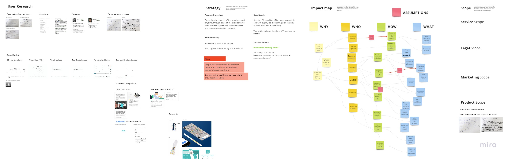

Assumption user journeys →
Actual journeys
I kicked off the design at svir.no with a collective exercise: together with the two data scientists, Jonas and Esten, we literally came up with what we assumed would be the journey of a person experiencing UTI.
Most people afflicted by UTI are women - and it was a somewhat alien concept to us. Putting our thoughts on paper, comparing them, and realizing they were assumptions was a good exercise to pinpoint where our undestanding of the problem was fuzzy. This informed the interview script. Then I carried out interviews with five people who (actually) had UTI, where they shared their UTI stories.
Brand sprint
Another exercise I facilitated with the team, including the doctors - Henry and Kambiz - was a three-hour brand sprint from Google Ventures. We used the sprint to align the objectives of the enterprise: why are we doing this? where do we see svir in 20 years? Some feedback from the sessions was: "I never stopped to think about this things before".

Deciding on a hypothesis
After the brand sprint and the interviews, the team was struck with a dilemma - what hypothesis should we tackle first:
A feasibility hypothesis, to validate whether we could develop an AI-model to read the urine tests accurately
A usability hypothesis, to validate whether people could actually perform an AI-augmented urine test by themselves
Being strapped for resources, I argued for building a prototype to test the usability hypothesis - while trying to validate the utility hypothesis as cheaply as possible by manually collecting test samples. Another hypothesis we didn't get around to test was a value hypothesis, to validate whether people would value the product enough to buy it and make our work worthwhile.
Prototyping and user testing
In the final arc of my participation in the project, I built a Figma prototype to help simulate the experience of taking the AI-augmented urine test. To complete the simulation, I used actual test strips and the color calibration card (originally designed to help with the data collection). Each user was presented with the following scenario: you had UTI before and are feeling similar symptoms. You bought this product at a nearby pharmacy and downloaded the smartphone app instructed in the packaging. Follow the instructions on screen to perform the urine test (for the user tests, a cup of water replaced the urine).